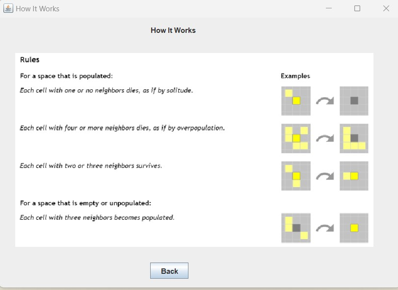
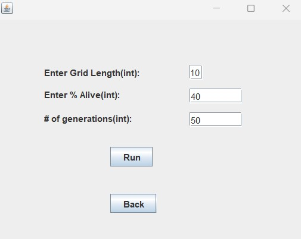
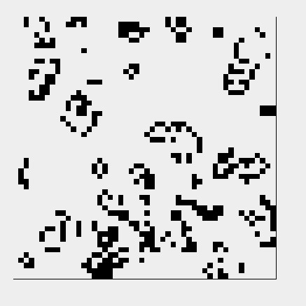
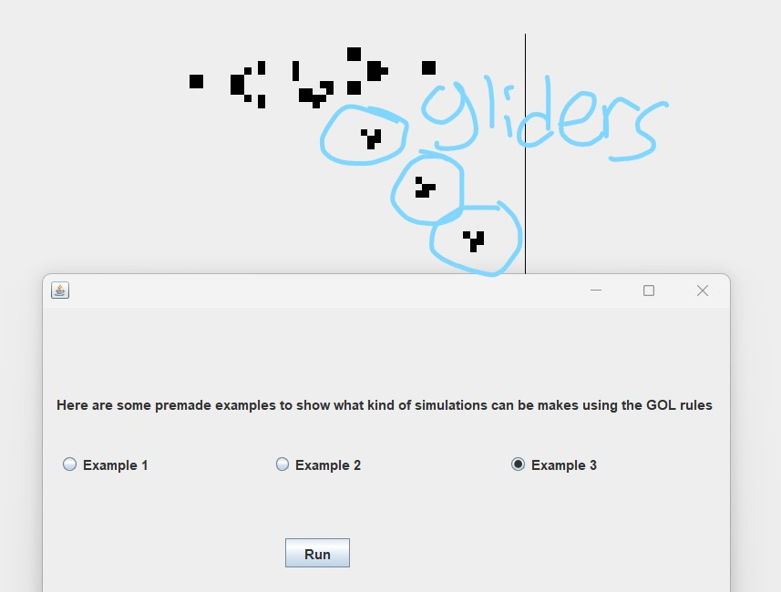
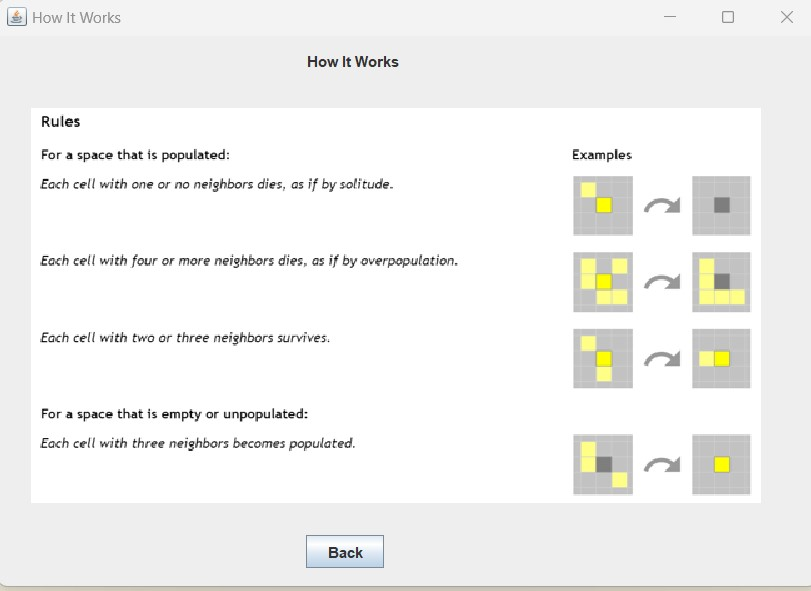
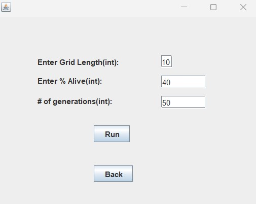
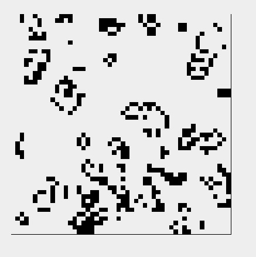
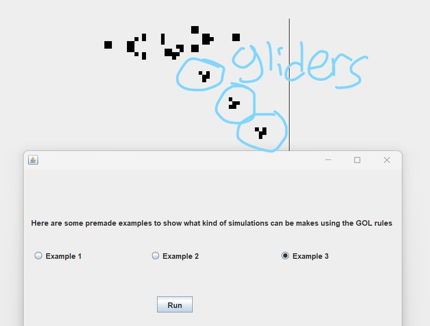

Repo Link (click me!)
Date: November to December 2022
I programmed this with Suvesh Bhusal, a fellow student at The Early College at Guilford.
We did it for our final project in our Intro to Computer Programming class. We made a GUI
that allowed the user to see an instruction manual, run some preset configurations, or
choose their own with parameters size and generations.
One challenge I had was the insane logic for the grid itself. Brute forcing the corners
and edges and center followed by the debugging might be the single most
difficult implementation of brute force
I have ever attempted. My biggest fear was making a mistake in the hundreds of lines of code, and it happened.
Another great challenge was replicating the glider gun.
Going to a website, copying down the coordinates of the glider gun starting configuration
into a text file, and then attempting Java I/O is one of the crazier ideas I am proud of coming up with.
Here are some screenshots of the program:
 






